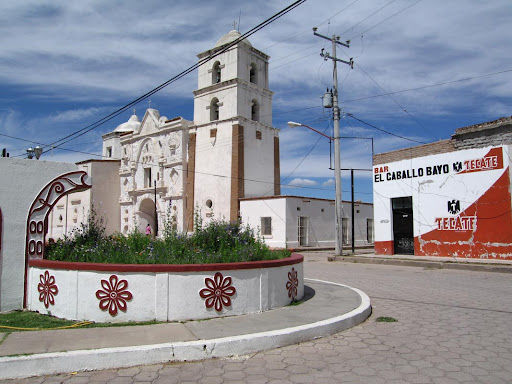

Ven y descubre lo que Sonora tiene preparado para ti, deslumbrate en los hermosos pueblos del Estado.

NACO
Naco es un municipio fronterizo de México ubicado en el noreste del estado de Sonora, en la frontera con los Estados Unidos, la cabecera del municipio tiene el mismo nombre. Se encuentra a 155 kilómetros de Nogales y a 55 kilómetros de Agua Prieta. Se sitúa justamente al lado del pueblo de Naco, Arizona

PITIQUITO
El municipio de Pitiquito se encuentra localizado en la zona noroccidental del estado de Sonora, formada mayoritariamente por el Desierto de Sonora y en la costa del Golfo de California,

TABUTAMA
Para el municipio del cual éste pueblo es cabecera, véase: «Tubutama » Tubutama es un pueblo mexicano ubicado en el norte del estado de Sonora, en la región del desierto sonorense. El pueblo es cabecera municipal y la segunda localidad más habitada del municipio de Tubutama, sólo después del ejido La Sangre.
